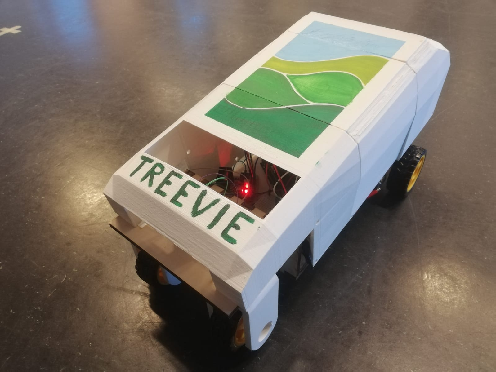
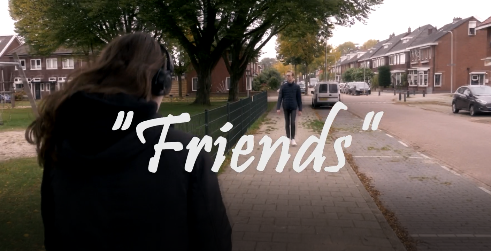

website by Feather
For this module's end assignment and practically the official end of the CreaTe programme, we were tasked with making an installation as a true test of what we learned during our CreaTe courses. Our group chose to busy ourselves with the increasing problem of coral bleaching, and it's unfortunate increase over the years. Based on the year and region chosen by the user, the user can see in the form of lights lighting up in the center coral piece, as well as more text and graph based visual on an iPad, how much coral bleaching has occured when and where. I mostly worked on the initial design of the installation as well as placement and colors of the final product. During the actual building process however, I mostly worked with building the wooden structure, giving it a lick of paint, fixing unexpected problems in construction and electronics, as well as designing the lasercut crabs and worldmap. During the final day, I aided in Python programming relating to the music that was playing as ambient music at all times. It was a lot of work and a lot of fun, truly a work to be proud of. We even won a prize of creativity at the final presentations and showcases!
For the Animated Storytelling course this module, my project partner and I made an animation about gender inequality on the workfloor. All visuals were drawn by me using Illustrator and Painttool SAI. The animating was done in After Effects in which both my partner and I took part.
In this module there were two courses that taught me how to use illustrator, whether it's through tutorials or trying stuff out by myself, I learned the program quite efficiently. This small piece is nothing special, but it was nice to see that a character I made in illustrator was used in one of my courses this module. I got quite the grip of this program now, another skill to add to my professional toolbox.
During this module (module 8), I was contacted by an old art teacher of mine whether I wanted to create an artpiece for the Cultuurnacht Breda. The project was to pick an already existing artwork from a slide and create your own version of it. I chose a picture that to me looked like a sword stuck in the ground and created a story based on that image. The final project is a silent infinitely looping video. Briefly, the story is that every person who touches the sword has their vision warped into seeing regular people as monsters that need to be slain. After the sword's bloodlust has been quenched, the sword's wielder will be consumed by the blade. This leaves the sword in its original state ready to be found again by a new wielder. For this project I let myself be inspired by the tales of the Muramasa swords as well; swords that drive the wielder to murder, bloodlust, and insanity until they're too weak to go on.
This module I, with the help of two others, started a small concept company geared towards commissions in 2D art in the form of digital drawings and animations. So far we have two artists of which I am one, and a manager who keeps the workflow and meetings in order. It's still only a very small project, but we do have a name and a concept logo (that my fellow artist and I created).
For our study association's events, there are usually posters all over the campus buildings to promote the activities. There's a committee, the GraphiCie, that brainstorms and produces the posters in discussion with the other committees hosting the events. Apart from my pLAN game event committee work, I thought it would be nice to look for a committee that not only is useful and fun when it comes to establishing connections and hosting fun events, but also caters to my creative hobbies. After going to the committee market, I decided to join the GraphiCie so I could put my creative skills to work in the form of aesthetically pleasing poster designs as well as being in a crowd of other creative people. My trial period is closing and the piece below is what I had to create in order to get in. For a pLAN event, I created a poster with haste since it was too late to ask the GraphiCie to produce one. The product of this poster can also be seen below.
For this module, I joined another mentor group briefly to participate in a welding workshop. The reason for this is that I would like to check out creative smithing and welding when I get the opportunity, and this seemed like a good stepping stone towards that goal. In the workshop we were taught how to weld basic lines, and afterwards we were tasked the flatten out square pieces of metal and weld them together into a waterproof cube.
Quite some modules ago, we had to create a badge using mathematical equations. I tended to stay up late and thus got an idea to make a design based on Creative Technology students staying up late to finish work or just in general to have fun together. The design I ended up with is something I liked to the point it might be fun to make a more professional version of, as in a real logo. I might print the logo on a clothing item at some point actually, haha. The product of this practice can be seen in the image below. I made another version for the front of for example a shirt or hoodie, just as a small brand icon.
To exclusively create a page for my creative artworks, I created an Artstation account so I can redirect people to that page if they want to have a look at what I can offer as a freelance artist.
For the big M7 project, the team I'm in called TowerFlora build a greenspace product for workspaces. This product is called Bloom Blox and is supposed to help with the employees' wellbeing while working. The way the product works is by making it accessible, sustainable, portable, and low maintenance so employees can enjoy greenspaces in their workplace instead of having to go out and look for that little bit of relax time a greenspace can offer. In the pictures our lo-fi prototype can be seen (with what is supposed to be a watertank on top), the logo I created, and a drawing a teammate made to sketch how the product would look in the workplace.
For M6 AI&P project, my partner and I settled on making a pacman game with more gimmicks to make it harder. The main thing about this game was to use the theory about search algorithms such as A* and Greedy in this project. We succeeded with a nice grade and in the end made a fun, functional, and borderline anxiety inducing game when it comes to difficulty. In the picture below, you can see an early sketch of what we wanted the game map to look like.
For one of the previous modules, we had to create a moving object of our own choice and animate it. I got inspired by a series I used to watch: RWBY I was quite proud of my gun that turns into a blade the moment a button on the gun is pressed. I might look into future projects like these since it was enjoyable to do and allowed me to roam free.
For module 5's big project we had to create a videogame incorporating everything from 3d modelling to programming and sound engineering. My project partner and I created a game, A Harmony's Reach, in which the protagonist tries to bring back music into a village that lost its harmonies by fixing his guitar.
For module 5 we had to create a boardgame as part of one of the courses. My project partner and I decided on a game that has the players roam a haunted mansion to find treasures and tools to escape the mansion with. When the players weren't fast enough or very unlucky, they could become part of the mansion itself in the form of ghosts!
For this module's Have Fun & Play course, I created a poster to hopefully give people a better understanding what they're about to step into when they give our VR social bubble experience a go. To keep it simple but interesting I chose to use a simple color palette and clean 1 or 2 color shapes as visuals for the poster. These simple shapes placed in perspective look pleasing, but aren't too demanding of the viewer's attention. They don't deter the viewer from actually reading what is written on the papers that are displayed in the poster which is exactly what out project team was going for!
For this module's professional development course, I created a webshop on RedBubble with a good friend of mine! He looked into the logistics of owning a webshop while I busied myself with looking into what catches people's attention when they look at specific designs. Eventually implementing that knowledge in my own art is the end goal here though, got to have some designs to sell, haha! If you're interested into visiting our webshop you can either search for "TheBurgundyOwl" on RedBubble or use this link to instantly get taken to our webshop page! (Fun fact: the logo of the webshop you can see below was drawn by me!)
For this module's programming course, I created a small game which I definitely plan on fleshing out a bit more. Right now, the user can shoot crossbow bolts attended the enemy, damaging it. The enemy however doesn't have a moveset yet which is something I'd still very much like to add at some point! The graphics look great though. I'm pretty satisfied with the results, though with a bit more time, I would've been able to refine it to my taste.
For this module's Human Centered Design course, we attended a mandatory foam workshop and were tasked with creating a controller. Before the workshop started, we had to make some sketches so we could use all the time we had to actually make our concepts come to life in about 4 hours total. In my sketch under this paragraph, you can see both my controller concepts. On the left side you can see a Bayonetta inspired controller (which I chose to make as a foam model as can be seen in the pictures ;p) and on the right side, you can see a NieR: Automata inspired controller. To this day I'm proud of what I was able to create in the four hour workshop and plan on refining the final design with sandpaper and spraypaint. I might even make a 3d model to use as casing for one of my Xbox or Playstation controllers, who knows!
For this module's Living Working Tomorrow group project, our team decided on making a beercap collector, the 'Brewski' as we call it, for Studentenstal that can be placed on campus to get more subscribers for Studentenstal. As a user, you put a beercap in, watch it fall through the 'pinball machine'-like display after which it falls into a can with a certain amount of points depending on where the cap fell. After putting in all the beercaps, you can scan the QR-code that takes you to the Studentenstal site on which you can either subscribe or login to collect your points. With your points you could, for example, get discounts at certain stores or certain Studentenstal products. At the end of each month, the collected beercaps in the collector get donated to that month's charity that can be checked on the left side of the machine.
Last module I made a plant monitoring system for the end assignment for the Programming and Physical Computing course with my project partner. Together we made a system that lets you wirelessly adjust preferred values for ground humidity, amount of light and temperature for the plant. If either one of the values or multiple at the same time cross a threshold with its measurements it got from the plant, a warning by the use of LEDs next to the plant will be given to the user as well as an on-screen indicator that the plant isn't 'happy'. To make the monitoring system feel a little less machine like and more empathetic to the user, the eyes on the on-screen monitor switch expression. For example when one value crosses it's set threshold, the eyes become neutral, but if more values are received that are not right, the eyes become sad. This signals the user that they should pay some attention to either the plant's temperature, moisture level or amount of light needed depending on what is wrong according to the on-screen monitor. I actually plan on improving this project to a degree that I can use it for personal use, haha.
This module I busied myself with a part of the Advent Of Code to improve my programming in Python. I'm lucky to have a housemate who's very proficient in programming and was willing to help me with all the challenges. Sometimes we really had to wrack our minds as to what pattern we should be able to find in the input we got, but we eventually managed to solve all the challenges we tried our hand at. By clicking this link, you can find the code along with the inputs we got from day two to day six' challenges of the Advent Of Code 2020.
Hello again, this item is something I've been working with my group (the Disaster Blasters) as our final project for the Smart Environments classes. Based on the theme "Disasters" we had to do a whole lot of research about which or what kind of disaster we wanted our project to be about. We came to an agreement on choosing deforestation as our subject. Our idea is that we can make a robot that can drill a hole in the ground and drop a seed in the hole as to make the wasted ground useful again.

In the image above you can see how far we've come with our robot (which we call Treevie) until now. Right now, the robot can drive forwards and backwards. For the next meet-up we plan to make the distance, humidity and temperature sensors work as well as the servo that can open the box in which the seeds can be stored before they're dropped.
First of all, you can visit our video project here! Beware of the following disclaimber though: If the video files' size will become a problem in the future, the files will be taken down and can only be seen again if you were to contact me.

The story portrayed in the video is about two childhood friends who happen to meet again. They meet up a few days later to catch up. The protagonist of the story notices that something about his friend is off.
I once made this item for my art class in my second last year of Highschool. Based on some stated topics such as 'History' and 'Technology', we had to choose one of them and create an outfit that reflects your chosen topic. I picked 'History' and based on that, made an outfit that's supposed to remind the viewer of the Industrial Revolution. One detail though, we were not allowed to use fabric! In order to realise my idea, I used paper, tissues, rubber bands, staples, glue and wood. I went with a Steampunk-ish feminine design with references to long coats, corsets, gears and clocks. The cane at the side of the coat is more a fantasy add-on, but nonetheless, I think it does reflect wealthy men in the Industrial Revolution period walking around with their coats, canes and top hats.
This portfolio item holds quite some value to me since this was my final project for my Informatics class in highschool. We were put into groups and had to think of a teamname. We went for Game Vault Entertainment (the logo I created for our teamname can be seen in this post). As to how we divided the work, I did all the programming (with some help of a friend who is really competent in GML) and made some small design elements to make the game seem just a little more polished. These elements include the textbox design of the protagonist and her animated portrait. In this small game you play as the protagonist who has no clue where she has ended up. She seems to be in some sort of escape room environment and has to solve puzzles to continue to the next room. The idea was to implement a secret ending if you somehow used all the methods to solve the rooms by replaying the game several times. The secret ending would explain the bigger story at hand, but unfortunately, we didn't have enough time to add this feature. We did leave one little detail that alludes to a bigger story just for fun. Maybe I'll be able to create a full version or sequel to this game when I have the time, but for now it'd be best to focus on studying :p. Please click this link to download the game and play it for yourself sometime! As a small addition, I'd like to mention that a good friend of mine made the soundtracks played in the rooms and homescreen. The tune on the Game Over screen though is a slowed down musicbox version of Dreamcatcher's 'Deja Vu'.
My second portfolio post has to do with the corona pandemic. Someone I know works for the GGD and asked me several years ago whether I could edit some pictures for the travel vaccinations section of the GGD. From then on, I became the go-to person whenever the person in question or his/her colleagues need a catching picture or flyer to capture the attention of other colleagues. At first, I only made things for the travel vaccinations website and meetings, but by now, I was asked to make things regarding some general national GGD meetings, travel vaccinations, the corona pandemic, innovation sprints and so forth. All things I create are for intern use only, but have nonetheless made some differences during meetings and innovation sprints. My next portfolio might even include a draft I was asked to make for a new GGD Website layout, who knows!
Like I said before in a blog post of mine, these two portraits are part of my Visual Communication project. For this particular part of my project, I had to some up with three tonality words that summarize a short story I wrote earlier on in the project process. The three words I came up with are: Mysterious, Multidimensional and Eerie. I actually got inspired by the word 'Eerie' and drew a portrait based on that word and my short story. I wasn't allowed to just use the drawn portrait in my project, so I decided to edit the picture in photoshop to make it a little more abstract and meaningful. The eventual result of both my drawing and editing process can be seen above this text!